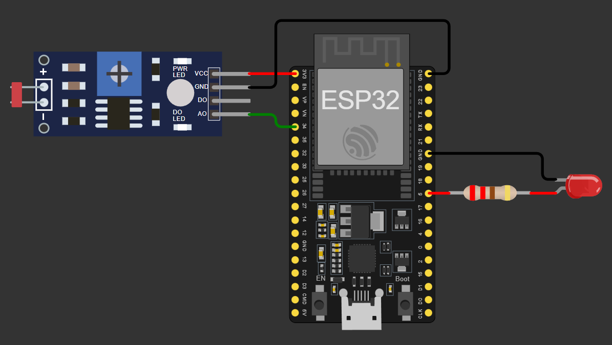
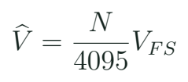
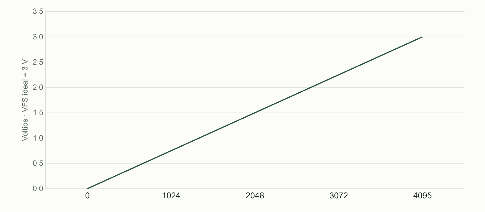
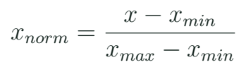

ADC y calibración: de una lectura a una decisión
Interpretar lecturas analógicas, construir una escala de trabajo y justificar dos umbrales de histéresis.
Qué convierte un ADC
Un sensor analógico representa una condición mediante una tensión. El convertidor analógico a digital devuelve un número que depende de esa tensión y de la configuración. En una lectura de 12 bits existen 4096 códigos posibles, numerados de 0 a 4095. Esa cantidad describe resolución de código; no demuestra exactitud ni una relación perfectamente lineal en toda la entrada. El ESP32 clásico ofrece varios canales y restricciones que hay que relacionar con el pin elegido.

GPIO34 pertenece a ADC1 y es una entrada sin pull-up interno. En nuestro banco se conecta a un potenciómetro o a la salida analógica de un divisor de luz que respete el rango del pin. Elegimos ADC1 para que la práctica se pueda conservar cuando añadamos Wi-Fi. La elección no convierte el pin en tolerante a 5 V. La configuración de atenuación y el rango útil se consultan para la variante real.
La LDR cambia su resistencia con la iluminación. El divisor la transforma en tensión. Si se intercambia la posición de la LDR y del resistor fijo, se invierte la tendencia de la lectura. Por eso no se enseña que oscuridad equivale siempre a un número pequeño. Se sigue el circuito y se mide la tendencia. Ese razonamiento también sirve al interpretar un joystick o cualquier sensor con salida analógica.
La escala ideal y la escala calibrada

En un modelo ideal con escala completa de 3,0 V, el código 2048 representa aproximadamente 1,50 V. En hardware comparamos esa idea con una medición y con la API calibrada disponible. analogRead() devuelve código bruto y analogReadMilliVolts() ofrece una conversión calibrada según el soporte de la plataforma. Una variable llamada voltaje no queda calibrada por recibir ese nombre. El alumno conserva el método de obtención junto al dato.
Cuatro conceptos distintos
| Concepto | Qué describe | Ejemplo de comprobación |
|---|---|---|
| Resolución | Cantidad de códigos | 12 bits: 4096 códigos |
| Exactitud | Cercanía a referencia | Comparar con instrumento |
| Repetibilidad | Dispersión al repetir | Varias lecturas iguales |
| Saturación | Extremo de conversión | Más entrada, mismo código |
Para construir una escala de trabajo, observa dos condiciones reproducibles. En la LDR pueden ser dos niveles de iluminación del banco; en un joystick, centro y recorridos permitidos. Los valores se guardan como datos de ese montaje. No se presentan como propiedades universales del componente. Conviene evitar las zonas donde la lectura se satura y perdería capacidad para distinguir cambios.
Ruido, promedio e histéresis
Una lectura real puede fluctuar aunque el objeto parezca quieto. Un promedio reduce algunas variaciones rápidas, pero también retrasa cambios y no corrige un sesgo de calibración. La histéresis usa dos límites para evitar que una salida cambie repetidamente cuando la entrada oscila cerca de una frontera. Si el sistema ya está encendido, requiere superar el umbral de apagado para cambiar de estado; entre ambos conserva su decisión.
Lecturas cerca del umbral
La secuencia es 1490, 1510, 1495, 1505, 1820. El sistema inicia apagado, enciende por debajo de 1500 y apaga por encima de 1800. ¿Qué estados aparecen?
Ver razonamiento del caso
Enciende con 1490; mantiene encendido con 1510, 1495 y 1505; apaga con 1820. El intervalo intermedio conserva memoria del estado.
Operaciones sobre la lectura
| Operación | Ayuda a | No resuelve por sí sola |
|---|---|---|
| Promedio | Atenuar fluctuación | Calibración absoluta |
| Histéresis | Evitar conmutación repetida | Cambiar polaridad del divisor |
| Límite de rango | Detectar o recortar extremos | Recuperar información saturada |
Antes de filtrar, busca si la variación corresponde al objeto o al montaje. Mover un cable defectuoso no produce el mismo problema que una señal física cambiante. En el registro se conservan lectura bruta y resultado procesado. Si solo guardas el promedio, será difícil investigar qué sucedió con la entrada original.

Código que conserva una decisión
Núcleo de c04_adc
int raw = analogRead(34);
if (raw < 1500) on = true;
else if (raw > 1800) on = false;
digitalWrite(23, on);Entre ambos umbrales no se asigna un valor nuevo a on. Esa ausencia es deliberada: la variable mantiene el estado anterior. Cambiar else if por otra regla independiente puede modificar el comportamiento si las condiciones se solapan. La versión completa configura resolución y atenuación y registra tiempo, código y estado. El periodo de 50 ms se declara para que los datos puedan compararse.
map() realiza una transformación de escala con aritmética entera y no limita automáticamente la salida. Si un valor excede los extremos de entrada, el resultado puede exceder los extremos deseados. Cuando el proyecto necesita recortar, se hace explícitamente y se conserva el hecho de que la entrada salió del rango. Una escala de porcentaje es una convención de trabajo; no equivale automáticamente a una medida física certificada de iluminación o humedad.
Laboratorio con una referencia visible
- Verifica la alimentación y la referencia del divisor o potenciómetro.
- Registra diez lecturas con la entrada quieta y anota mínimo, máximo y contexto.
- Repite en dos condiciones distintas y determina el sentido de la respuesta.
- Ejecuta c04_adc y sustituye los umbrales de ejercicio por una propuesta de tu montaje.
- Introduce cambios lentos alrededor de la frontera y compara uno y dos umbrales.
- Conserva los datos brutos junto a la salida; comprueba qué sucede al desconectar una entrada de forma controlada.
- Explica una limitación del modelo de Wokwi frente al circuito físico.
La simulación permite controlar una entrada y estudiar la lógica del programa. El comportamiento analógico del mundo real añade dispersión, impedancias, alimentación y límites que el modelo no reproduce completamente. Una práctica de calibración física requiere una referencia y condiciones conservadas. El alumnado sin kit puede resolver la parte lógica y analizar un conjunto de datos identificado, mientras el docente demuestra la medición real.
Aplicación: observar batería sin conectar una batería al ADC
El principio de un divisor permite reducir una tensión para observarla, pero una batería real de dron exige un diseño de entrada completo y conocer sus límites. En este bloque practicamos con una fuente de baja tensión o un potenciómetro. El equipo puede dibujar una cadena conceptual de observación de batería: magnitud, acondicionamiento, ADC, calibración y umbral. El aprendizaje transferible consiste en justificar cada transformación y detectar qué falta por comprobar.

Investiga qué ocurre con ADC2 del ESP32 clásico al usar Wi-Fi y por qué elegimos GPIO34. Localiza además qué expresa la atenuación. Presenta una lectura de la API en milivoltios con el método que la produjo, sin confundir el valor de alimentación de la placa con la escala exacta del convertidor. La conclusión de clase debe diferenciar una medida, una conversión ideal y una decisión de software.
Práctica guiada
- Mostrar que invertir el divisor invierte la tendencia de la lectura.
- Distinguir códigos, voltios y porcentaje con un caso numérico.
- Comprobar histéresis con la secuencia de cinco lecturas.
- Registrar una calibración pequeña y justificar dos umbrales.
Preguntas de cierre
¿12 bits significan 12 bits de exactitud?
No. Describen códigos; la exactitud depende del sistema y de su calibración.
¿map() limita la salida?
No; si el proyecto lo necesita, se limita explícitamente y se trata el fuera de rango.
¿Qué hace la histéresis entre límites?
Conserva la decisión anterior.
Entrega
CSV de lecturas, sentido del divisor y justificación de umbrales.
Proyectos MECRO relacionados
- 03. Luz Nocturna (LDR) · Núcleo. ADC, LDR e histéresis Abrir referencia Wokwi
- 12. Brazo Robótico (Sim) · Extensión. Brazo de banco y calibración de servo Abrir referencia Wokwi
- 17. Mando de Vuelo (Flight Controller) · Núcleo corregido. Mando y demostración P de banco Abrir referencia Wokwi
Fuentes para ampliar
[MECRO] MECRO. Laboratorio Electrónica con ESP32: veinte proyectos.
[ADC] Espressif Systems. Arduino-ESP32: ADC.
[GPIO] Espressif Systems. GPIO y restricciones de ESP32 clásico.
[MIT] Agarwal y Lang / MIT OpenCourseWare. 6.002 Circuits and Electronics; texto: Foundations of Analog and Digital Electronic Circuits (2005).